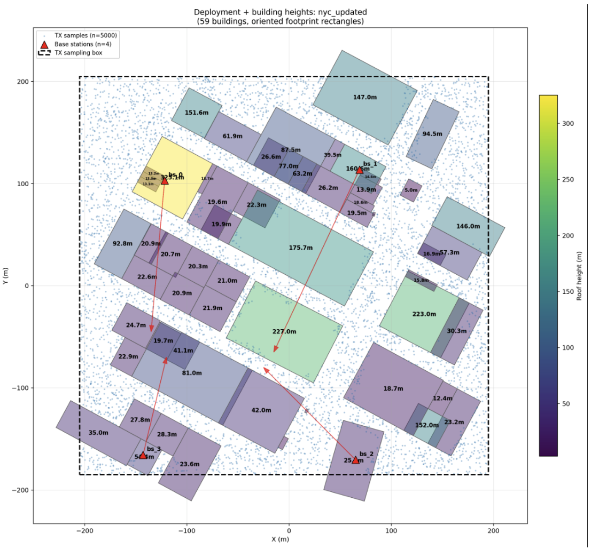

- Focused on FPGA/VHDL, digital design, and module verification.
We are developing AI/ML-based positioning algorithms for realistic urban environments, using NVIDIA Sionna to generate synthetic channel data from site-specific wireless digital twins. Alongside the algorithmic work, we are interested in the fundamental estimation-theoretic limits on what any positioning system can achieve in these settings. The primary focus is FR3 bands.
- Generated synthetic wireless datasets using realistic 3D scenes and ray tracing.
- Built preprocessing pipelines for multi-base-station channel tensors and position labels.
- Integrated Overture Maps building-height data to replace missing OSM heights and improve simulation accuracy.
